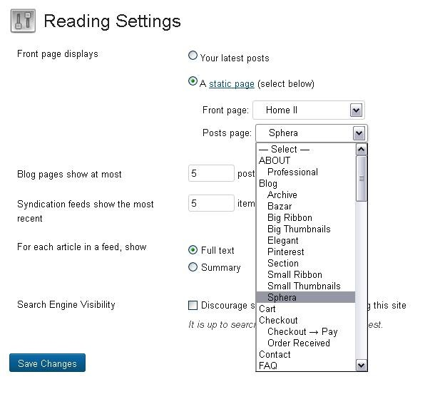
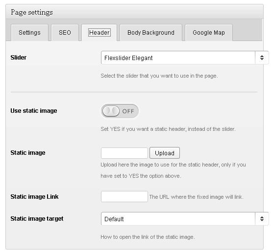
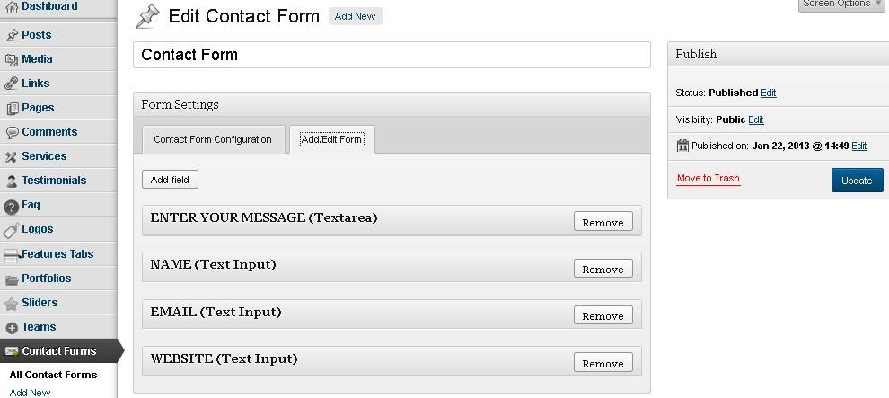

By now your site has the look and feel of a true Bazar shop.
In this section, you will learn all about Pages, including how to choose and set your Home Page, how to create a Home Page using one of 10 layouts if you did not import the demo content, and how to choose and set your Blog Page.
You will also learn how to set your Site Pages (including sidebars and SEO settings), how to use the “Read More” shortcode when you write an article, and how to set your Contact Page.
Now we will explore the specific contents contained in the editor for the different Page Layouts:CHOOSE AND SET YOUR HOME PAGE - We have included many Page Layouts for you to choose from. Here are two ways to choose and set your Home Page.
First Method: If you installed the Demo Content, you don’t need to create a new Home Page, you just need to choose from among the ten (10) Home Pages that were automatically created from the demo content.
Now let’s suppose you want HOME-II as your home page. To set it, you would navigate to your WP-Admin panel, scroll down the left sidebar to “Settings” and click on “Reading Settings:”
Click on “A static page”, then click on the “Front Page Box” to open a drop-down list. In this example, we chose “Home II” as our Home page.
Next, choose a Blog page by clicking the “Posts Page tab” to open a drop-down list. Here, we chose Sphera.

Now you can further customize your site:
Decide how many Blog Pages and Syndication feeds you want to show.
Regarding feed articles, click to show the full text.
**Note – We will demonstrate how to use the “Read More” button.
Decide whether you want to discourage the Search Engines from indexing your site. **Note – this is usually chosen while the site is being set up and tweaked. You can always go back later and un-click it so that the Search Engines will index it.
NOW SAVE YOUR CHANGES!
CHOOSE AND SET YOUR BLOG PAGE.
Now you will need to do the same thing for your blog. Note here that we chose the “Sphera” blog design from the “Pages” option on the left. After we click “Add to Menu”, the Sphera page appears on the menu.
Next, we clicked the Sphera drop-down arrow and it opened to look like the image below.
Then we changed the “Navigation Label” from Sphera to “Blog”. You may change your Navigation Label to whatever you choose, such as “News” or “Information”.
Note that the bottom of the drop-down shows “Original: Sphera.” This means you are using the “Sphera” layout but you have re-named it “Blog”.
Be sure to save all your changes!
BUT WAIT! If you DID NOT import the Demo Content, you will need to MANUALLY CREATE your Home and Blog Pages. Here’s how:
First, go to your WP-Amin left sidebar, click on “Pages” and click “Add New”.
Name your new page “Home,” “Home-I,” “Home-II,” or whatever is appropriate for the Home Page layout that you are using.
Now scroll to the right sidebar and click on the Template drop-down arrow. From the drop-down, choose the “Home” template.
Scroll up to “Parent” and click on the drop-down. Then click “Home” because the Home page will be the parent.
Add any content you want, or add the content later, whichever you choose.
Now scroll up and click “Publish”.
Create your Blog Page the same way.
First, add a new page, give it a name (we called ours “Blog”), then scroll to “Parent” and click on “Blog”. Then scroll to “Template” and click on “Blog”.
That’s all there is to it!
**Note: You can show blog posts on other pages that are not using the Blog template, by using the “Blog” shortcode. You can find it by clicking the “Y” in the Visual text window (shown above), or by clicking “Get Shortcodes” if you are using the Text Window.
TWEAKING YOUR PAGES – Whether you create your Pages via manually or via demo content, you can do many things to tweak and improve them.
Every Page will include these options:
In this example, we are preparing to tweak our Blog Page, which looks like this:
Beginning with “Page Settings”, we made the following changes:
a. Slogan – We added “Your Blog News”
b. Sub-Slogan – We added “Get it Here”
c. SideBar – Note by the highlighted sidebar that we decided to use the “Right Sidebar”. Then, since different pages can have different sidebars, we opened the Sidebar Dropdown to choose which sidebar to use. In our case, we decided to use the same sidebar that we use for the Home-11 layout.
DON’T FORGET TO SCROLL UP TO THE TOP RIGHT SIDE OF YOUR PAGE AND CLICK “UPDATE!”
This is what our tweaked Blog Page looks like. Note the “Stay Updated” info and “Popular Posts” info which appear to the “Right Sidebar”.
Now we will proceed to “SEO”, or “Search Engine Optimization”. **Note - This demonstration is not included to give you a lesson on SEO, but only to show you how you can tweak our pages:
Depending upon your website’s theme and your page’s purpose, you can choose a popular SEO title for your page. We gave our blog page the title of “Indie News”.
You can also include important keywords and a page description. We used “indie” and “entrepreneur” as key words, then wrote a quick page description.
There are many places that can help you develop keywords. One example is Google Keywords.
CLICK SAVE THEN REFRESH!
On first glance, it may seem as if nothing has changed, but it has:
Notice here that even though your visitor is technically on your blog page, the tab says “Indie News”, just as you labeled it on the SEO page.
Now let’s tweak the Header:

For purposes of this demonstration, we chose the slider “Flexslider Elegant”, but you can add whatever you like. Also, we are leaving the other “tweak possibilities” to you to experiment with as you please. SAVE AND REFRESH!
Now let’s see how our Blog page looks with a slider on it:
Here it is, complete with the Flexslider Elegant choice! Notice that it still displays the Slogan and Sub-Slogan we assigned to it earlier.
Our next tweak is the background color or image:
You can experiment with any image, color or option you desire. SAVE AND REFRESH! Here is how our Blog page looks after inserting a custom green color:
For the Google Maps Page Tweak, please see the Bazar Shop video tutorial.
WRITING AN ARTICLE AND USING THE “READ MORE” BUTTON – First you need to CREATE A NEW POST. Scroll to the left sidebar of your WP-Admin panel, click on “Posts” and from the drop-down, choose “Add New”.
When the Post Page opens, give it a title, add some text, choose a Format, and choose a Category. In this example, we’ve added two paragraphs of text. We have also chosen the “Standard” format and we listed this article as “Uncategorized”.
To see how your article will look BEFORE YOU SAVE IT, you can scroll to the top right and click “Save Draft” then “Preview”. Here is what ours looks like:
But perhaps you want to abbreviate the text so that your visitors will only see the first paragraph, and will have to click “Read More” to read the rest of the post. Here’s how to do it:
First, decide how much text you want your readers to see. In the example below, we decided to show the first paragraph only, so we scrolled to the end of the paragraph and clicked so that the cursor appeared there.
Next, we located the word “More” on the Post toolbar (highlighted in this example). When we clicked “More” the shortcode appeared at the end of the first paragraph.

And here’s how the “More” shortcode looks in the Visual Editor:

Next, we scrolled right and clicked “Publish”, because this is the only way to see how the finished post will look. Then we clicked “Preview”, and here’s our Post with “More:”
Notice that the title “Test Post” has shifted to the left side after we clicked “Publish”. Also now only the first paragraph of the article shows, and a NEW BUTTON shows that says, “VIEW THE FULL ARTICLE”.

But what if you want to add a picture to your post? Here’s what you do: Scroll to the top of your browser and find and click “EDIT PAGE”. This will take you back to the original “Test Post” editable screen.
Now scroll down to the bottom right of the page and find and click “Set Featured Image”.
This will open your Media page, and you can either upload an image or use a previously uploaded image. In the example below, we are using a previously uploaded image. We clicked on the picture on the third row, second from the left and a “check mark” appeared, indicating that this is the picture we want to use.
Now scroll to the bottom right and click the blue box that says "Set Featured Image". Then scroll to the top right and click “Update”.
Here’s how our page looks with the picture we chose:
You can experiment placing the “Read More” button or placing pictures wherever you like on your article.
Setting Your Contact Page – Let’s assume that you imported the demo content and already have a Contact Page (if you DID NOT import the demo content, go ahead and create a Contact Page).
Notice the “short code” in the body of the page. Also notice that we made sure we were using the correct template by scrolling right to “Template” clicking on the drop-down and highlighting “Contact”.
To create your Contact Form, scroll to the left Sidebar, click on “Contact Forms”, then click “Add New”.
Here is what your screen will look like. Since you can have as many unique Contact Forms as you like, you should give each form you create a unique name so you it is easy to find when you want to use it. For this demonstration, we gave ours the name “Your New Contact Form.”
Next, you will notice TWO TABS: Contact Form Configuration and Add/Edit Form.
Beginning with the Contact Form Configuration tab, scroll through the options and complete all the fields. For example, “Receiver(s) and Senders” will YOUR email, or the email of a person designated by you. Place the Sender Name of your choice in the appropriate field. Here, we’ve used “Admin”.

Complete all the other fields.
Now click on the Add/Edit Form field. The screen will have several fields. In this example, there are four fields: Message, Name, Email, Website.

On “Enter Your Message”, find and click on the drop-down arrow to get to this screen:

Complete all the fields. **Note – The DATA NAME field
Now open the other three fields and complete the information.
CLICK SAVE!
Now navigate back to the WP-Admin sidebar (left), find and click on Contact Forms>All Contact Forms. You should have given your Contact Form a name. In our case, we named ours “Contact Form”.
To the extreme right of the “Contact Form” is the shortcode that should be copied and pasted into your Contact Page.
Copy and paste this code into your Contact Page, click UPDATE, then scroll to the bottom of your Contact Page to complete the customization:
Just like the earlier pages, you can tweak your Contact Page.
In this example, we have tweaked the Slogan, the Sub-Slogan, and the Sidebar (note that this sidebar is located to the left).
We have previously demonstrated how to tweak your SEO, so we will skip this.
Now we will tweak your Contact Page Header.
Notice (in the image below) that we have decided NOT to use a slider.
We have moved the “Use Static Image” button to the “On” position because we have our own “static” custom image we desire to use.
To use a custom image, simply click “Upload”, then upload the image from wherever it is located. Once it has finished uploading, it will produce a link that you should copy and paste into the “Static Image” box, like the example below:

We will not complete a Background tweak this time, so we will move on to the Google Map tweak:
Notice that the Google Map option includes a link to Google Maps. When you follow that link, you will be able to insert your business or home address to generate a map link for your website.
**NOTE – YOU CAN ALSO USE AN IMAGE LINK IN THE GOOGLE MAP FIELD, IF YOU PREFER.
Now CLICK SAVE and navigate to your Contact Page to see how it looks in its finished form.
Here is our Contact Page after all the tweaking. Notice the Custom image, the Slogan and Sub-Slogan and the Google Map.
That’s all there is to it! Now ON TO STEP FIVE!